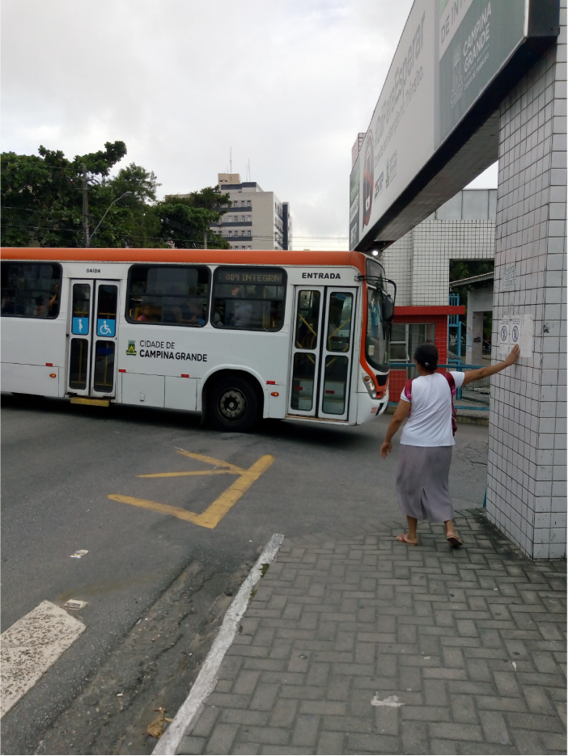

©2017 LabRua
Template: Bootstrapious
+ Kishan B

Entorno do Terminal de Integração: Diagnóstico e Proposta de intervenção.
O terminal de integração, localizado no centro de Campina Grande - PB consiste em uma ferramenta urbana que interliga diversas linhas de ônibus da cidade, atraindo assim uma quantidade significativa de pessoas para o lugar.
O acesso destas a este equipamento, entretanto, é marcado por um cruzamento em específico, que chamou a atenção dos pesquisadores do LabRua por seu desenho viário complexo, grande conflito de fluxos e, principalmente, as dificuldades que os pedestres encontram para acessar e circular no seu entorno.

Diariamente diversas pessoas passam pela área do cruzamento, seja de ônibus, carro, moto ou a pé. Por o desenho urbano priorizar o veículo motorizado, podem-se identificar no cruzamento vários problemas que acarretam na insegurança dos transeuntes, como a existência de poucas faixas de pedestres que não atenderem à linha de deslocamento natural dos mesmos. Os usuários diversas vezes precisam dividir espaço com os ônibus para realizar travessias simples, que são dificultadas ainda pela não existência de calçadas ao longo das ruas, tendo assim diversos relatos de acidentes ocorridos no local.

A área não atende as necessidades básicas de mobilidade e de acessibilidade para os pedestres, previstas na NBR 9050. Também não é possível identificar melhorias na composição do lugar desde a implantação da integração em 2008, visto que existe insuficiência de estrutura que ofereça segurança e favoreçam a transição e permanência dos usuários do terminal, o que inspira atenção para o cruzamento.
Diante dos problemas expostos, essa pesquisa tem como objetivo realizar um diagnóstico da área e propor um redesenho urbano para o cruzamento das ruas Pedro II e Índios Cariris de forma a priorizar o pedestre. Atualmente a pesquisa se encontra finalizada, tendo sido realizada entre os meses de Julho e novembro de 2018, em que foi elaborado o diagnóstico visando compreender melhor como os fluxos do cruzamento interagem entre si e como eles podem ser otimizados.
Análises produzidas nessa pesquisa
Focando apenas no cruzamento próximo à entrada principal do Terminal de Integração, essa pesquisa está produzindo os seguintes materiais:
- Levantamento geométrico e atualização do mapa da área;
- Realização de contagens volumétrica e direcional de modais;
- Observação de comportamentos dos pedestres;
- Desenvolvimento de mapas que espacializa as informações coletadas;
- Entrevistas com usuários do terminal e pedestres que cruzam a área.
Diretrizes gerais propostas
Após a sistematização dos dados que foram coletados, desenvolveu-se diretrizes projetuais voltadas ao desenho urbano do cruzamento e parte do seu entorno. O intuito é solucionar as problemáticas encontradas no local, com o objetivo de melhorar a qualidade do seu espaço urbano priorizando os deslocamentos não-motorizados, em especial os pedestres, oferecendo mais qualidade no espaço caminhável:
- Ajuste do número de faixas de veículos na Rua Sebastião Donato, tendo sido identificado uma largura maior que a necessária para o volume de veículos que passam no local;
- Inserção de Ciclofaixa;
- Alargamento e continuidade das calçadas, permitindo a circulação dos pedestres de forma simples, respeitando a linha de desejo natural;
- Implantação de faixas de pedestres em todos os pontos de cruzamento, não limitando a caminhabilidade das pessoas.
Publicações relacionadas
[Artigo apresentado no Fórum HABITAR 2019: Habitação e Desenvolvimento Sustentável.](../../pdf/Artigo Habitar - Terminal de Integração.pdf)
.